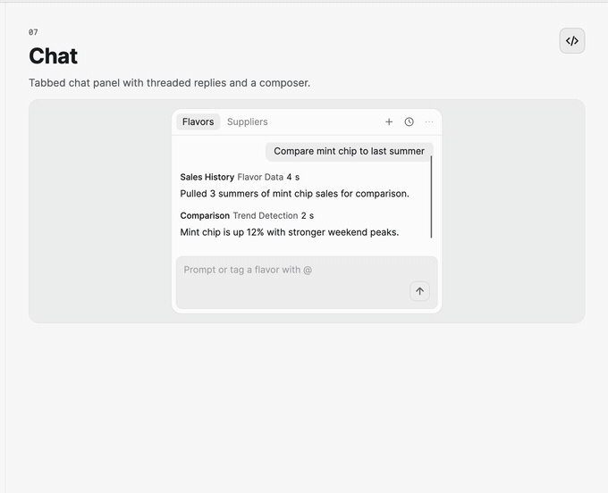
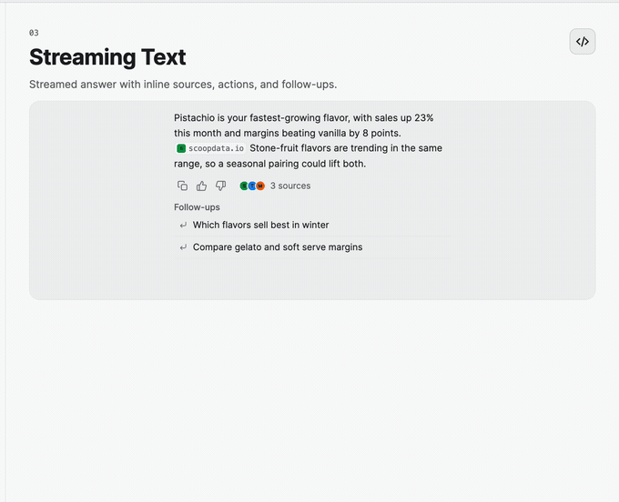

Conversation Controls
Use ChatMessageList and ChatComposer for a compact chat surface, then add StreamingTextBlock and FollowUpList when the response arrives incrementally or suggests a next turn.

Display and submit messages
<Grid RowDefinitions="*,Auto" RowSpacing="8">
<nova:ChatMessageList ItemsSource="{Binding Messages}"
AutoScrollToEnd="True" />
<nova:ChatComposer Grid.Row="1"
Text="{Binding Draft}"
PlaceholderText="Ask anything…"
Command="{Binding SendMessageCommand}" />
</Grid>
ChatMessageList.ItemsSource commonly contains ChatMessage records. AutoScrollToEnd follows new content only while the reader remains near the end; scrolling upward suspends automatic movement. Supply ItemTemplate when the transcript requires a custom message presentation.
ChatComposer.Command receives the submitted text. SubmitCommand and the Submitted event receive a richer event snapshot. Set ClearOnSubmit="False" when the host should retain the draft.
Submission clears the input before notifying handlers so a handler can supply a replacement draft. If an event handler or command throws synchronously and the input is still empty, the original draft is restored and the exception is propagated. Asynchronous send failures remain the host's responsibility.
Stream an answer
<nova:StreamingTextBlock StreamedText="{Binding CurrentAnswer}"
RevealDuration="0:0:0.42"
TextWrapping="Wrap" />
Use the bound property when the provider exposes growing snapshots. Replacing or shortening the string resets its inline state. Growing a string for every token copies the accumulated response, so prefer batched AppendText calls for long streams:
// Run control updates on the Avalonia UI thread.
answer.ResetStream();
answer.AppendText("First chunk ");
answer.AppendText("and the next chunk.");
answer.FlushStreamedText();
AppendText reveals new content immediately and debounces the public text snapshot. Call FlushStreamedText when the stream finishes, including cancellation when the partial response should be retained. Call ResetStream before displaying a new response: it clears text, citations, animations, and the pending snapshot timer even when the previous public snapshot is still empty, and preserves the binding. Cancel the previous producer and reject late chunks from an obsolete turn before resetting. Set IsAnimationEnabled="False" for immediate updates without fades.
AppendText, AppendInline, FlushStreamedText, and ResetStream must run on the UI thread. Calls from another thread throw before changing stream state; dispatch background producer updates through Dispatcher.UIThread.

Offer follow-ups
<nova:FollowUpList Header="Try asking"
ItemsSource="{Binding FollowUps}"
Command="{Binding ChooseFollowUpCommand}" />
FollowUpList raises FollowUpSelected and supports Command or FollowUpCommand. Use ItemsMaxHeight to constrain a long generated list.